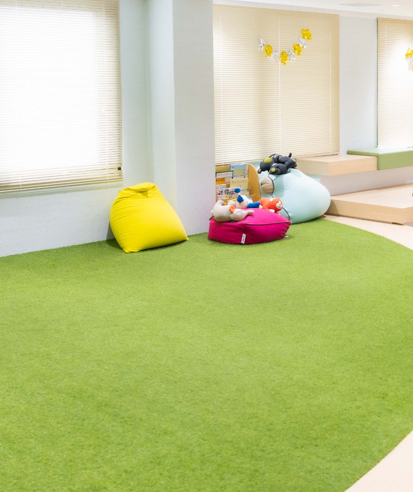
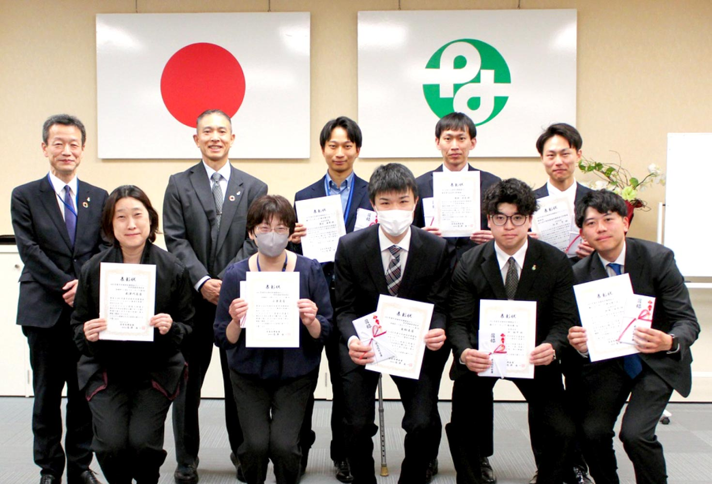
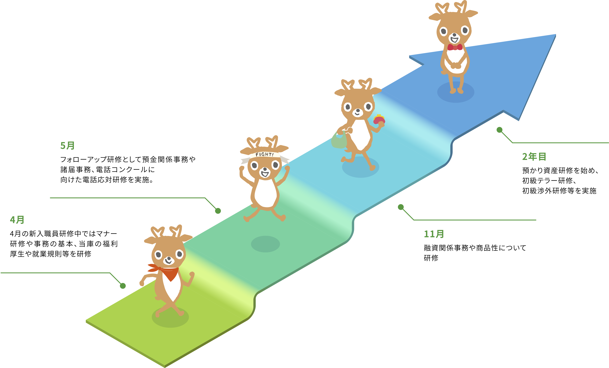

福利厚⽣・研修制度Benefits & Training


福利厚⽣
永年勤続表彰制度
永年金庫に勤務し、業務に貢献された方を表彰しています。

個人表彰制度
日ごろお客さまのために取り組んだ仕事や地域貢献活動(ボランティア)で顕著な成績を残された方を表彰しています。
ビジネスカジュアル・ノーネクタイ
勤務時の服装としてビジネスカジュアルを実施しています。これまでの【男性：スーツ／女性：制服】という態勢を見直し、それぞれの職員が、気候や体調・その日の気分など自分にあった服装を選択できるようにしています。
研修制度
新入職員研修

その他研修制度
業務の専門知識を深める研修
ダミー文章です。奈良県北部を中心に永年に渡り「ならしん」の愛称で親しまれこの地域と共に歩んでまいりました。
リーダーシップ・マネジメント研修
ダミー文章です。奈良県北部を中心に永年に渡り「ならしん」の愛称で親しまれこの地域と共に歩んでまいりました。
人材育成制度
通信講座
金融専門知識を1〜5年目まで段階的に習得。実務ではわかりにくい点も体系的に学ぶことができます。
E-ラーニング
自宅でPCやスマホを使って受講できる動画です。金融の講座以外にも時事ニュースやPCスキル・英語など、自分の興味のある分野を何でも学べます。
試験合格褒賞金制度
金庫で定める資格試験（FPなど）の合格者へ褒賞金をお支払いしています。
コーチャー制度
若手先輩職員がコーチャーになって、指導したり相談に乗ったりしています。最初は誰しも職場に馴染めるか不安なものですが、奈良信用金庫ではコーチャーや先輩職員に何でも相談でき、職場でのコミュニケーションも活発です。
制度利用者の声
仲谷 駿佑
融資担当
2016年入庫（商学部卒）
育児休業制度・トレーニー制度
2人目の子供が生まれた時に育児休業制度を利用し、2ヶ月間育児休業を取得しました。同じ店舗で働く職員の厚いサポートもあり、家庭での時間に専念することができました。また、トレーニー制度といわれる研修制度を利用し、本部にある融資審査本部に2ヶ月在籍し、融資について学びました。奈良信用金庫は私生活を充実させながらキャリアを築ける環境があり、安心して長く働き続けることができると思います。
菅原 亜祐美
MA（マネーアドバイザー）担当
2023年入社（政策創造学部卒）
産後骨盤体操教室
育休中開催されていた産後骨盤体操教室を利用しました。産後で歪んでしまった骨盤の体操をしようというもので、子供と離れて自分自身の身体に向き合う時間がとれたことは貴重な経験となりました。また子連れでも参加可能だったり、授乳室があった点も助かりました。育休中の職員同士の交流が図れたり、社内制度の変更点などを知ることもできる良い機会でした。また復職後は保育園の送迎があるため、車通勤ができる点もありがたいです。